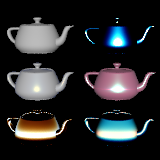
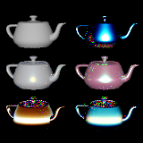
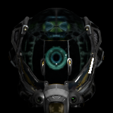
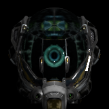
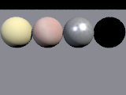
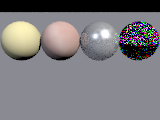
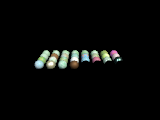
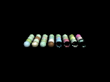
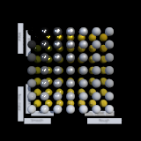

| Scene | Before (master, legacy) | After (migrated) | Mean Y before | Mean Y after | Change | Flag |
|---|---|---|---|---|---|---|
Tests/Materials/materials.RISEscene |
 |
 |
0.1294 ±0.00084 | 0.14082 ±0.00073 |
+8.8% | |
Tests/Importers/gltf_import_damaged_helmet.RISEscene |
 |
 |
0.061873 ±0.0047 | 0.06579 ±0.0055 |
+6.3% | noisy (salt sd 9%) |
Tests/GUI/panel_stress_params.RISEscene |
 |
 |
0.24026 ±5.7e-05 | 0.25369 ±0.00023 |
+5.6% | |
Tests/GUI/graph_stress_wide.RISEscene |
 |
 |
0.021611 ±9.4e-05 | 0.022471 ±0.00019 |
+4.0% | |
Tests/Importers/gltf_import_metalrough_spheres.RISEscene |
 |
0.080673 ±9.2e-05 | 0.083854 ±0.0002 |
+3.9% | ||
Tests/Shaders/transparency_shaderop.RISEscene |
0.01052 ±0 | 0.010288 ±3.3e-06 |
-2.2% | |||
Tests/Importers/gltf_import_alpha_blend.RISEscene |
0.32976 ±4.5e-06 | 0.33275 ±5e-05 |
+0.9% | |||
Tests/Geometry/csg_comprehensive.RISEscene |
0.0088995 ±4e-05 | 0.0089439 ±4.2e-05 |
+0.5% | |||
Tests/Materials/ggx_diffuse_transmission.RISEscene |
0.012199 ±2.5e-05 | 0.012248 ±9.1e-06 |
+0.4% | |||
Tests/Materials/pbr_specular_anisotropy.RISEscene |
0.01496 ±1.1e-05 | 0.015007 ±1.5e-05 |
+0.3% | |||
Tests/Materials/pbr_metallic_roughness.RISEscene |
0.013727 ±2.4e-05 | 0.013768 ±8.4e-05 |
+0.3% | |||
Tests/Materials/fabric_presets.RISEscene |
0.048875 ±2.9e-05 | 0.049013 ±4.1e-05 |
+0.3% | |||
Tests/Geometry/scenegraph_stress.RISEscene |
0.14179 ±0.00023 | 0.14148 ±0.00021 |
-0.2% | |||
Tests/Geometry/sweep_loop.RISEscene |
0.059467 ±0.00011 | 0.059578 ±0.00016 |
+0.2% | |||
Tests/Materials/anisotropic_uv_tangent.RISEscene |
0.0016539 ±2.2e-07 | 0.0016569 ±2.4e-07 |
+0.2% | |||
Tests/Geometry/csg.RISEscene |
0.0003296 ±6.7e-07 | 0.00032909 ±5.4e-07 |
-0.2% | |||
Tests/Importers/gltf_import_avocado.RISEscene |
0.068186 ±7.6e-06 | 0.068255 ±8.5e-06 |
+0.1% | |||
Tests/Geometry/skin_stress.RISEscene |
0.29205 ±0.00033 | 0.29179 ±0.00084 |
-0.1% | |||
Tests/Geometry/sweep_instances.RISEscene |
0.067186 ±7.1e-05 | 0.067129 ±0.00016 |
-0.1% | |||
Tests/GUI/graph_stress_editing.RISEscene |
0.26178 ±1.3e-05 | 0.262 ±1.5e-05 |
+0.1% | |||
Tests/Animation/animation_temporal_scanning.RISEscene |
1.3043 ±0.00026 | 1.3051 ±0.00056 |
+0.1% | |||
Tests/Geometry/sweep_stress.RISEscene |
0.4964 ±0.00011 | 0.49616 ±0.00022 |
-0.0% | |||
Tests/Geometry/displaced_procedural.RISEscene |
 |
0.10251 ±0.0001 | 0.10246 ±1.8e-05 |
-0.0% | ||
Tests/Geometry/gltf_normal_mapped.RISEscene |
0.020868 ±1.6e-05 | 0.020858 ±1.2e-05 |
-0.0% | |||
Tests/Geometry/lathe_basic.RISEscene |
0.24038 ±5.8e-05 | 0.24049 ±0.00011 |
+0.0% | |||
Tests/Painters/stochastic_scatter.RISEscene |
0.019429 ±7.3e-05 | 0.019419 ±6.5e-05 |
-0.0% | |||
Tests/SDF/sdf_arealight.RISEscene |
0.47388 ±0.00092 | 0.47409 ±0.00018 |
+0.0% | |||
Tests/Materials/unlit.RISEscene |
0.022926 ±1.8e-05 | 0.022916 ±5.7e-06 |
-0.0% | |||
Tests/Geometry/skeleton_basic.RISEscene |
0.67271 ±0.00014 | 0.67245 ±9.8e-06 |
-0.0% | |||
Tests/Geometry/gltf_box.RISEscene |
0.093647 ±2.2e-05 | 0.093612 ±8.8e-06 |
-0.0% | |||
Tests/Geometry/lathe_stress.RISEscene |
0.48665 ±0.00031 | 0.48648 ±0.00033 |
-0.0% | |||
Tests/Painters/textureaccessors.RISEscene |
0.036627 ±1.2e-05 | 0.036616 ±2.3e-05 |
-0.0% | |||
Tests/Geometry/loft_stress.RISEscene |
0.5538 ±0.00028 | 0.55363 ±5.6e-05 |
-0.0% | |||
Tests/Geometry/displaced_shapes.RISEscene |
0.13136 ±9.8e-05 | 0.1314 ±0.00021 |
+0.0% | |||
Tests/Painters/fractal.RISEscene |
0.15109 ±4.9e-05 | 0.15106 ±8.5e-05 |
-0.0% | |||
Tests/Painters/expression_painter_marble.RISEscene |
0.10415 ±2.2e-05 | 0.10413 ±2.5e-05 |
-0.0% | |||
Tests/Geometry/skeleton_stress.RISEscene |
0.53605 ±0.00027 | 0.53594 ±0.00025 |
-0.0% | |||
Tests/Animation/named_animations.RISEscene |
6.8848 ±0.008 | 6.886 ±0.0076 |
+0.0% | |||
Tests/Geometry/displaced_self_shadow.RISEscene |
0.14125 ±3.1e-05 | 0.14122 ±6.1e-05 |
-0.0% | |||
Tests/Geometry/superellipsoid_stress.RISEscene |
0.4745 ±0.00064 | 0.47444 ±0.00031 |
-0.0% | |||
Tests/Geometry/displaced_torus.RISEscene |
0.20731 ±2.1e-05 | 0.20732 ±2.4e-05 |
+0.0% | |||
Tests/Geometry/displaced_box.RISEscene |
0.24266 ±7.3e-05 | 0.24265 ±6.2e-05 |
-0.0% | |||
Tests/Camera/physical_exposure.RISEscene |
 |
0.008146 ±8.9e-07 | 0.0081454 ±4.5e-07 |
-0.0% | ||
Tests/Geometry/aphrodite_mesh.RISEscene |
0.19921 ±0.00012 | 0.19919 ±8.8e-05 |
-0.0% | |||
Tests/Geometry/displaced_builders_stress.RISEscene |
0.30525 ±0.00039 | 0.30527 ±0.00011 |
+0.0% | |||
Tests/Cameras/thinlens.RISEscene |
0.10411 ±7.3e-06 | 0.10411 ±5.8e-06 |
+0.0% | |||
Tests/Geometry/misc_geometry_stress.RISEscene |
0.50926 ±0.00021 | 0.50929 ±0.00014 |
+0.0% | |||
Tests/Materials/sheen.RISEscene |
0.0069084 ±8.1e-06 | 0.0069087 ±1.5e-05 |
+0.0% | |||
Tests/Cameras/thinlens_tiltshift.RISEscene |
0.41632 ±0.00033 | 0.4163 ±0.00016 |
-0.0% | |||
Tests/Geometry/displaced_zero_scale.RISEscene |
0.27774 ±2.1e-05 | 0.27775 ±1.7e-05 |
+0.0% | |||
Tests/Painters/scalar_painter_expression_roughness.RISEscene |
0.21243 ±1e-05 | 0.21244 ±2.8e-06 |
+0.0% | |||
Tests/Cameras/multiple_cameras.RISEscene |
0.11849 ±8.7e-06 | 0.11849 ±3.1e-06 |
+0.0% | |||
Tests/Painters/ramp_painter_terrain.RISEscene |
0.25905 ±2.4e-05 | 0.25904 ±1.6e-05 |
-0.0% | |||
Tests/Cameras/camera_defaults.RISEscene |
0.48722 ±7e-05 | 0.48724 ±3.7e-05 |
+0.0% | |||
Tests/Geometry/gltf_duck.RISEscene |
0.12882 ±2.1e-05 | 0.12883 ±3.4e-05 |
+0.0% | |||
Tests/Painters/mapping_triplanar.RISEscene |
0.22318 ±1.9e-05 | 0.22318 ±2.3e-05 |
-0.0% | |||
Tests/SDF/sdf_shadows.RISEscene |
0.32643 ±5.1e-06 | 0.32643 ±5.6e-06 |
-0.0% | |||
Tests/Geometry/gerstner_plane.RISEscene |
0.34783 ±5.3e-05 | 0.34784 ±6.3e-05 |
+0.0% | |||
Tests/Geometry/displaced_sphere.RISEscene |
0.28767 ±2e-05 | 0.28767 ±2.8e-05 |
+0.0% | |||
Tests/Importers/gltf_helmet_light_control.RISEscene |
0.1779 ±7.8e-06 | 0.1779 ±1.1e-05 |
-0.0% | |||
Tests/Geometry/vertex_colors_quad.RISEscene |
0.017933 ±8.8e-08 | 0.017933 ±1.2e-07 |
+0.0% | |||
Tests/Animation/animation_exposure.RISEscene |
6.316 ±0.00026 | 6.316 ±0.00025 |
-0.0% | |||
Tests/Lighting/pb_units_validation.RISEscene |
5877.7 ±0.018 | 5877.6 ±0.033 |
-0.0% | |||
Tests/Cameras/realistic.RISEscene |
0.06996 ±2.5e-06 | 0.06996 ±4.8e-06 |
+0.0% | |||
Tests/Animation/basic_animation.RISEscene |
 |
6.3154 ±0 | 6.3154 ±0 |
+0.0% | ||
Tests/Geometry/bilinear_patch.RISEscene |
 |
0.008128 ±0 | 0.008128 ±0 |
+0.0% | ||
Tests/Geometry/csg_positioned_operands.RISEscene |
 |
0.035412 ±0 | 0.035412 ±0 |
+0.0% | ||
Tests/Geometry/ellipsoid.RISEscene |
 |
5.1918e-05 ±0 | 5.1918e-05 ±0 |
+0.0% | ||
Tests/Materials/authored_mesh_tangent.RISEscene |
 |
0.94375 ±0 | 0.94375 ±0 |
+0.0% | ||
Tests/Painters/blackbodyradiator.RISEscene |
 |
0.025756 ±0.00028 | 0.025756 ±0.00028 |
+0.0% | ||
Tests/Painters/jpg_painter.RISEscene |
 |
0.27732 ±0 | 0.27732 ±0 |
+0.0% | ||
Tests/Parser/loops.RISEscene |
 |
8.0925 ±0 | 8.0925 ±0 |
+0.0% | ||
Tests/Cameras/film_chunk.RISEscene |
— | — | — ±— | — ±— |
— | no render |
Tests/Parser/thinlens_retired_keys.RISEscene |
— | — | — ±— | — ±— |
— | no render |